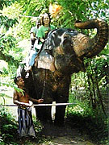
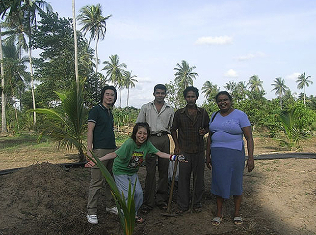
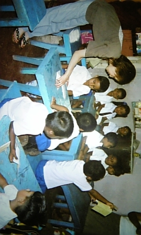
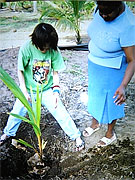
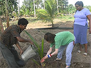

 ゾウに乗れて嬉しい！ |
 同時期にご参加の相内さまと。 |
「ボランティアの内容が他のボランティアとは違い、とても興味のある内容ばかりでしたので参加を決めました。
ホームステイ先のお母さんが先生ということなので、先生という感じもなく授業という感じもなく、リラックスな状態で学べました。
スリランカという国のことを全く場所も何も知らずに行きましたので、どれもこれも新鮮な気持ちで体験しました。
ホームステイは全く知らない世界だったので、すべてが興味ありで楽しく過ごせました！！
ホストマザー、ファーザーにも本当に親切で毎日が楽しく暮らせました！
本当に感謝するばかりです！！
低開発村視察に行って、自然と共に暮らすということ、村の人々は毎日の生活を日々楽しんでいるさまに感じました。
決してお金や暮らしには満足してるとは言えませんが、そんなことさえ感じないくらいの笑顔で迎えていただいた時私は世の幸せとは、これなんだなと思わされました。
日々自分が「お金、お金」と言ってたのが恥ずかしく感じます。
 夢が叶った！日本語教師！ |
最終日に幼稚園で日本語教師のボランティアをしましたが、幼稚園児とも本当に本当に楽しく過ごす事が出来て感無量でした！ 日本を海外の子供達に教えるというのは小さい頃の一時の夢でしたので子供達が歌を歌ってくれた時は泣きそうでした！ |
Beインターナショナルおよび現地受入団体のマーネルさんをはじめ皆さまとっても親切にしていただき、不安なことなど一切ありませんでした！！
何も文句もありません。逆にとてもフレンドリーで親切で私が頭を下げたいくらいでした。
今回、キングココナッツの苗を植えて、自分の名をつけてきたので、またいつか苗が大きくなった頃、見に行けたら良いなと思いますので、その時は是非このプログラムを利用させていただきたいと思っています。」
 自分の名前をつけたキングココナツ！ |
 この苗が大きくなった頃また行きたい♪ |